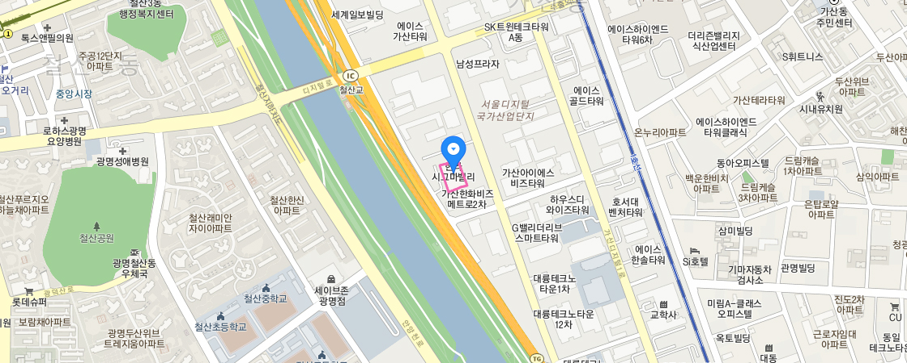

찾아오시는 길
- 홈
- 기관소개
- 찾아오시는 길

위치
인천광역시 남동구 남동대로215번길 30(고잔동) 인천종합비즈니스센터 710호
전화번호 / 팩스
전화번호: 032–811-9601~5
/ 팩스: 032–811-9606
/ 팩스: 032–811-9606
대중교통 전철 이용 시
대중교통 버스 이용 시
※ 경로를 클릭하면 최적경로를 볼 수 있습니다.
※ 버스노선을 클릭하면 해당 버스의 전체 노선을 볼 수 있습니다.
※ 정류장을 클릭하면 해당 정류장 지도를 볼 수 있습니다.
※ 버스노선을 클릭하면 해당 버스의 전체 노선을 볼 수 있습니다.
※ 정류장을 클릭하면 해당 정류장 지도를 볼 수 있습니다.
| 경로 및 정류장 | 지선버스 | 간선버스 |
|---|---|---|
| 인천종합버스터미널 → 인천어촌 특화지원센터 | 35번, 103번, 34번 | |
| 남동인더스파크역1번출구 | 인천e음55번 | |
| 한국산업단지공단 | 35번 | |
| 한국콘베어 공업 | 인천e음55번 |
자가용 이용시
| 출발지 | 경로 |
|---|---|
| 인천종합버스터미널 | 남동IC 560m → 경제자유구역·송도, 남동공단 564m → 경제자유구역·송도, 남동산단 방면 805m → 남동대로215번길 2.8km [길찾기] |